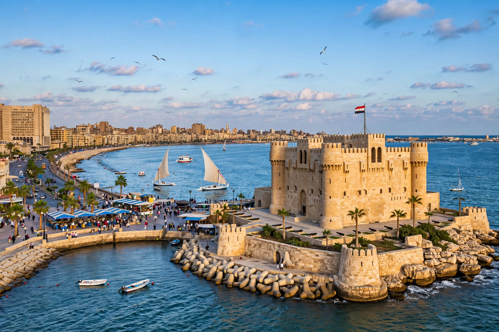

Wikipedia — the free encyclopedia

| Country | Egypt |
| Founded | 331 BC by Alexander the Great |
| Population | About 5 million (metropolitan, approx.) |
Alexandria is Egypt's second-largest city and its principal Mediterranean port, founded by Alexander the Great in 331 BC. Under the Ptolemies it became one of the greatest cities of the ancient world, famed for the Great Library, the Mouseion and the Pharos lighthouse — one of the Seven Wonders of the Ancient World.
Alexandria was the capital of Ptolemaic Egypt and a centre of Hellenistic scholarship (Euclid, Eratosthenes) and of early Christianity (the Catechetical School, Athanasius). It passed to Rome, then to the Arab armies in the 7th century, after which it declined until Muhammad Ali revived it in the 19th century as Egypt's window on the Mediterranean. The modern city stretches along the coast east and west of the ancient Eastern Harbour.
The 15th-century Citadel of Qaitbay stands on the Pharos site; the modern Bibliotheca Alexandrina (opened 2002) commemorates the ancient library; Montaza Palace and the Stanley Bridge are later landmarks.